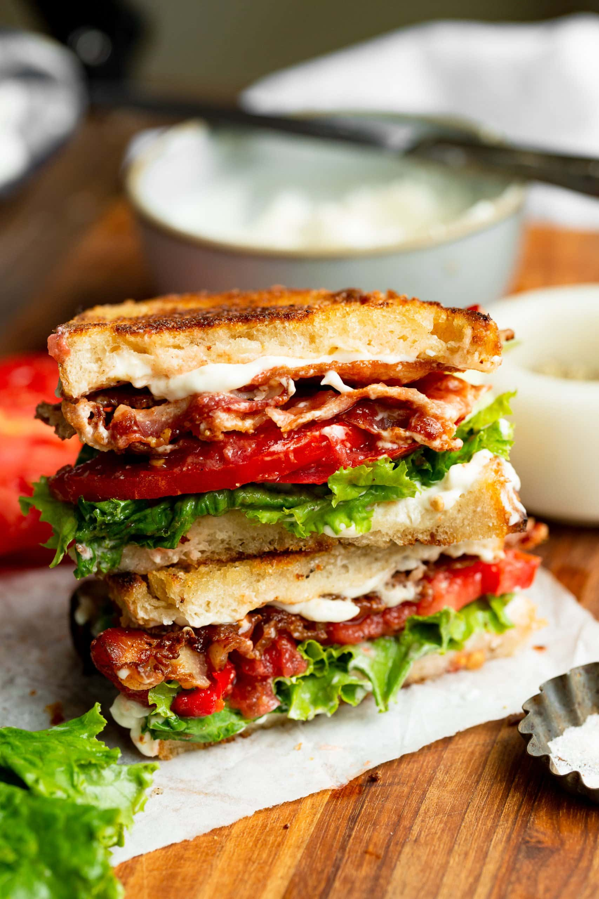

BLT Sandwich

Description
I know you’re probably thinking that you don’t need a recipe for a BLT…the ingredients are in the name of the sandwich, right? I have a few tricks to take your average BLT and make it the BEST BLT ever!
Ingredients
- 2 Tablespoons Butter
- 10 Slices Sour Dough Bread
- 1 Cup Dukes Mayo, if possible
- 2 Cloves Garlic
- 2-3 Fresh Tomatoes , beefsteak are best
- Salt and Pepper , to taste
- 1 Pound Thick or Thin Sliced Bacon, cooked, (preference is thin and use multiple for me as it's easier to eat)
- 1 Head Iceberg or Green Leaf Lettuce
Steps
- Heat a cast iron skillet over medium heat and melt the butter in the pan.
- Place each piece of bread face down on the skillet and cook on one side until golden and toasted. Repeat with all the pieces of bread. Set aside.
- In a small bowl, combine the mayonnaise and garlic and whisk together.
- Slice your tomatoes fairly thick and season well with salt and pepper.
- Prepare your lettuce.
- Assemble your sandwiches right before serving by spreading the mayo mixture on the untoasted side of all the pieces of bread.
- Top one piece of mayo'd bread with several pieces of lettuce, slices of seasoned tomatoes and as much bacon as you want. Then place another piece of mayo'd bread on top (mayo side down of course!) Repeat with all the rest of your bread and ingredients.
- Serve and enjoy!